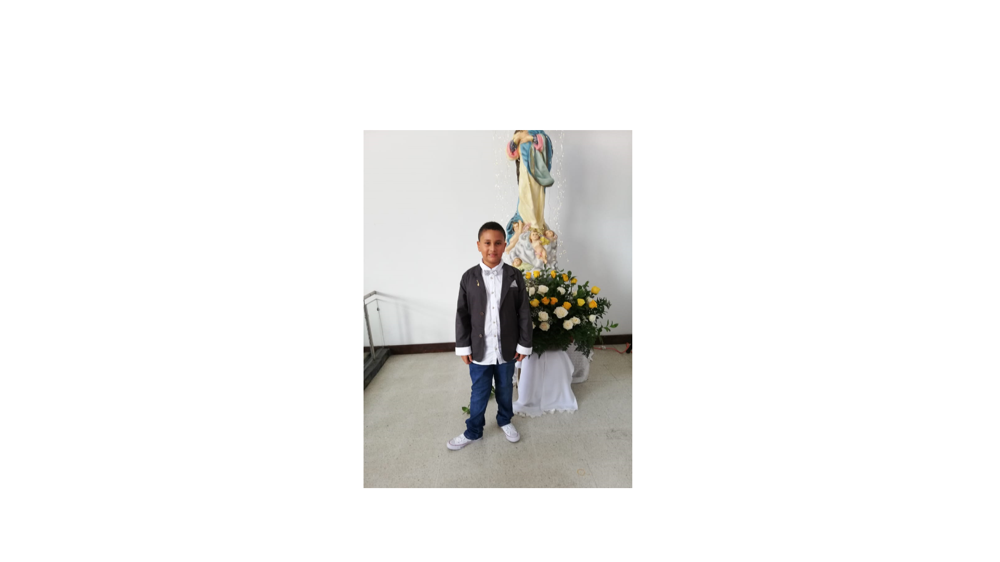

Página principal Santiago Suárez
foto

Me llamo Santiago Suárez estudio en el colegio Centro Educativo Neosistemas tengo 12 años estoy en el grado 7, vivo en girardota barrio nuevo horizonte mi papá se llama Fernando y mi mamá Monica, mis deportes favoritos son el futbol y la natación
Periodos